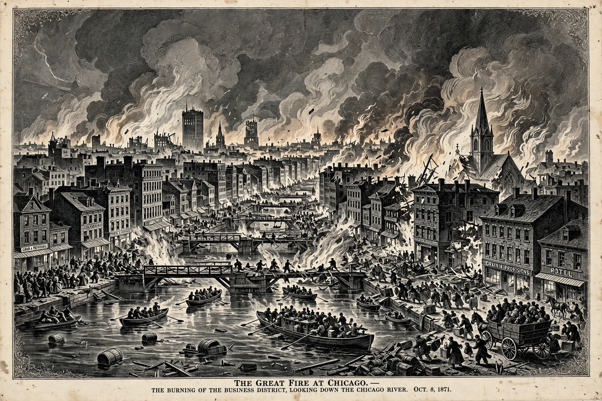

The Great Chicago Fire was a conflagration that burned in the American city of Chicago during October 8–10, 1871. The fire killed approximately 300 people, destroyed roughly 3.3 square miles of the city, and left more than 100,000 residents homeless.
Popular legend blamed a cow owned by Mrs. Catherine O'Leary for kicking over a lantern in a barn on DeKoven Street, where the fire did start, though the cause was never determined and a reporter later admitted embellishing the story.
Drought, wooden buildings and sidewalks, and strong winds let the fire jump the Chicago River twice, destroying the business district, including the grand hotel of Potter Palmer. Rain on the night of October 9–10 helped extinguish it.
Chicago rebuilt rapidly with stricter fire codes; the rebuilding boom helped make the city a centre of modern architecture and commerce. Bertha Palmer became a leading figure in the rebuilt city's civic life.